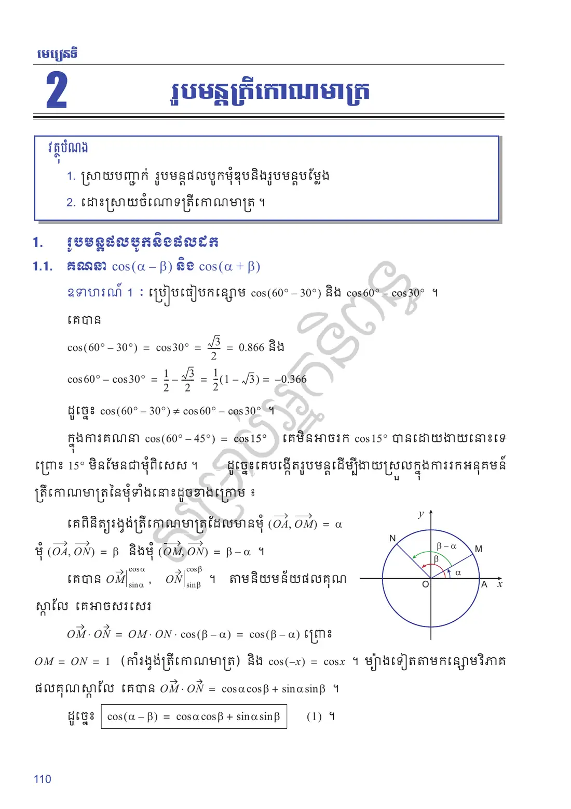
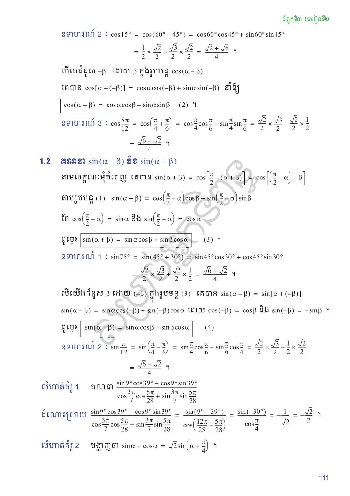
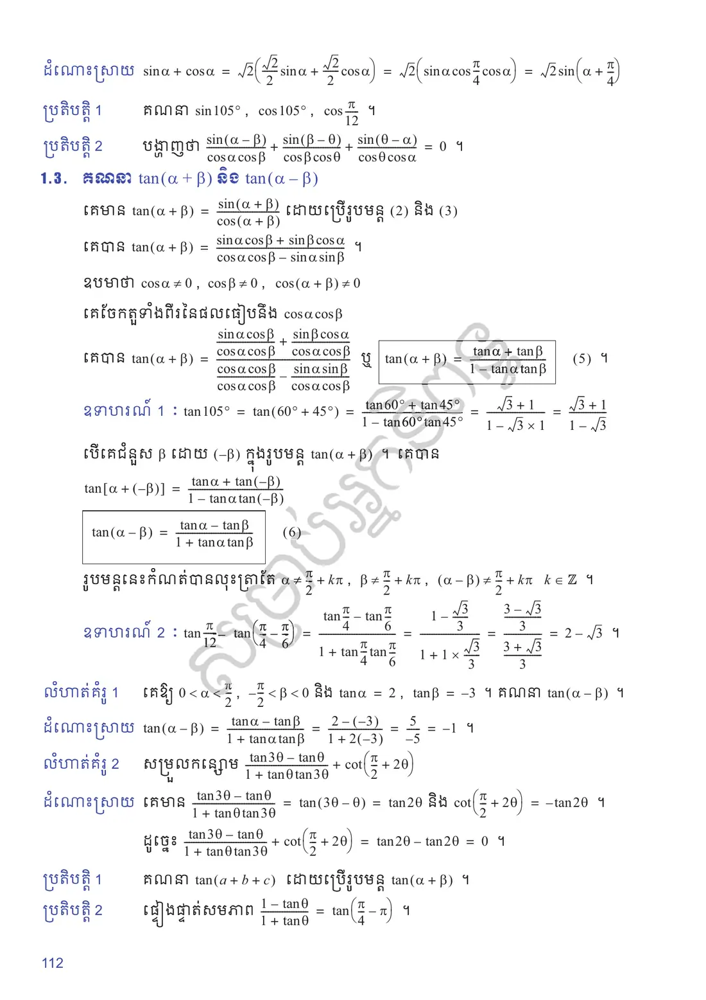
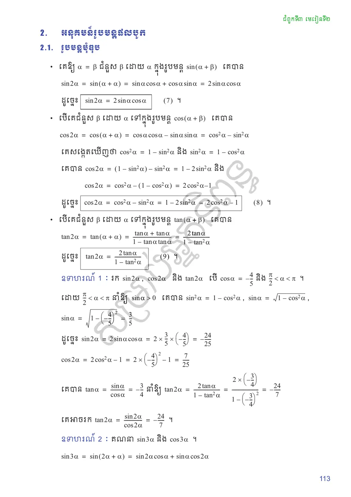
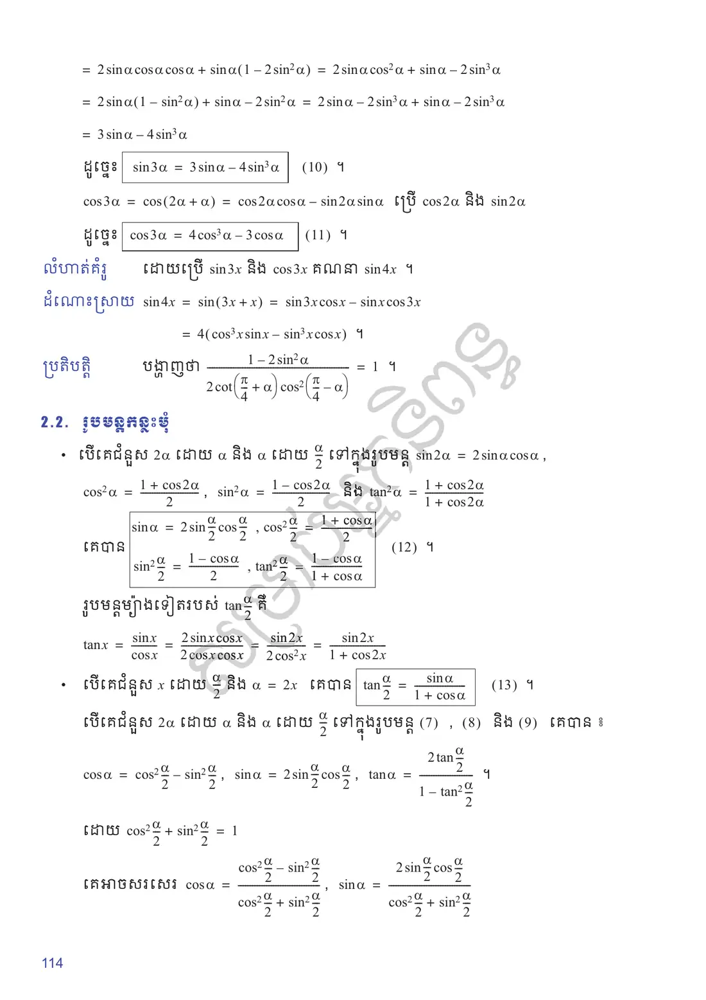
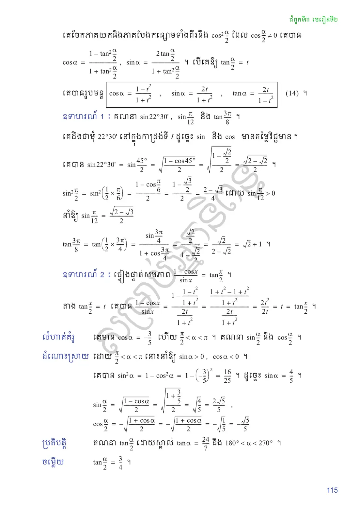
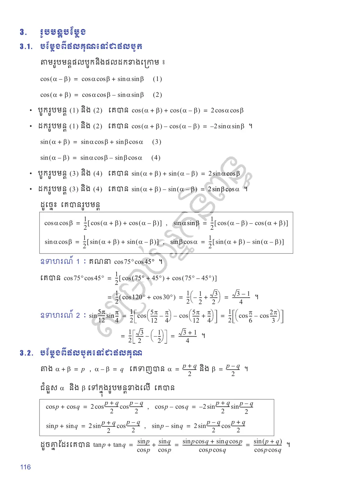
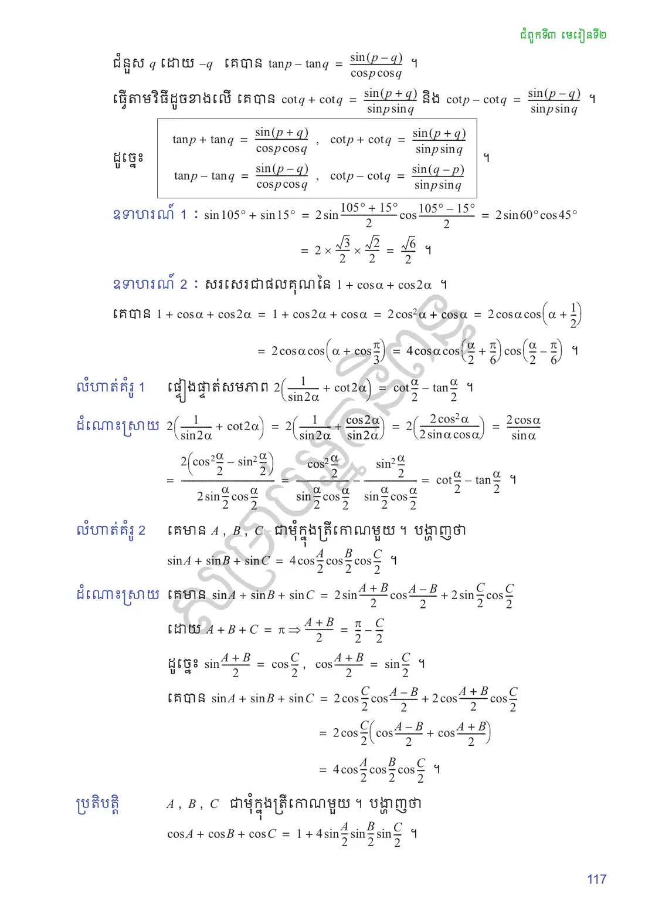
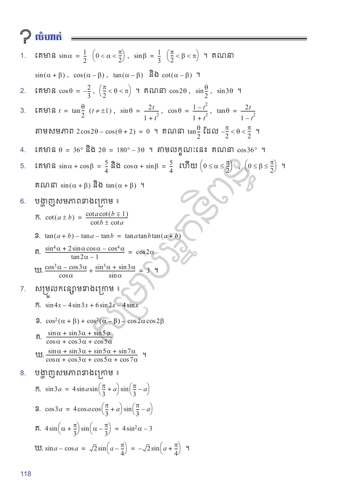
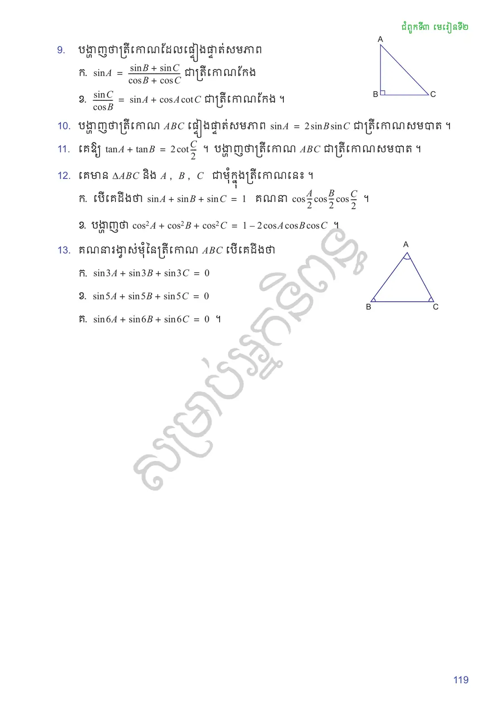

ស្រាយបញ្ជាក់ រូបមន្តផលបូកមុំឌុបនិងរូបមន្តបម្លែង
ដោះស្រាយចំណោទត្រីកោណមាត្រ ។
រូបមន្តផលបូកនិងផលដក
គណនា \(\cos(\alpha - \beta)\) និង \(\cos(\alpha + \beta)\)
ប្រៀបធៀបកន្សោម \(\cos(60^\circ - 30^\circ)\) និង \(\cos 60^\circ - \cos 30^\circ\) ។ គេបាន
ក្នុងការគណនា \(\cos(60^\circ - 45^\circ) = \cos 15^\circ\) គេមិនអាចរក \(\cos 15^\circ\) បានដោយងាយនោះទេ ព្រោះ \(15^\circ\) មិនមែនជាមុំពិសេស ។ ដូច្នេះគេបង្កើតរូបមន្តដើម្បីងាយស្រួលក្នុងការរកអនុគមន៍ត្រីកោណមាត្រនៃមុំទាំងនោះដូចខាងក្រោម ៖
គេពិនិត្យរង្វង់ត្រីកោណមាត្រដែលមានមុំ \((\overrightarrow{OA}, \overrightarrow{OM}) = \alpha\), មុំ \((\overrightarrow{OA}, \overrightarrow{ON}) = \beta\) និងមុំ \((\overrightarrow{OM}, \overrightarrow{ON}) = \beta - \alpha\) ។
![](data:image/svg+xml;charset=utf-8,%3C%3Fxml version=%221.0%22 encoding=%22UTF-8%22%3F%3E%3Csvg xmlns=%22http://www.w3.org/2000/svg%22 xmlns:xlink=%22http://www.w3.org/1999/xlink%22 width=%22117.92%22 height=%22115.62%22 viewBox=%220 0 117.92 115.62%22%3E%3Cdefs%3E%3Cg%3E%3Cg id=%22glyph-0-0%22%3E%3Cpath d=%22M 3.31 -3 C 3.37 -3.26 3.60 -4.17 4.29 -4.17 C 4.35 -4.17 4.59 -4.17 4.79 -4.04 C 4.51 -4 4.32 -3.75 4.32 -3.51 C 4.32 -3.34 4.43 -3.15 4.70 -3.15 C 4.92 -3.15 5.23 -3.34 5.23 -3.73 C 5.23 -4.25 4.65 -4.39 4.31 -4.39 C 3.73 -4.39 3.39 -3.85 3.26 -3.64 C 3.01 -4.29 2.48 -4.39 2.20 -4.39 C 1.15 -4.39 0.59 -3.10 0.59 -2.85 C 0.59 -2.76 0.70 -2.76 0.71 -2.76 C 0.79 -2.76 0.82 -2.78 0.84 -2.87 C 1.18 -3.92 1.84 -4.17 2.17 -4.17 C 2.35 -4.17 2.71 -4.07 2.71 -3.51 C 2.71 -3.20 2.54 -2.53 2.17 -1.14 C 2.01 -0.53 1.67 -0.10 1.23 -0.10 C 1.17 -0.10 0.93 -0.10 0.73 -0.23 C 0.98 -0.28 1.20 -0.5 1.20 -0.78 C 1.20 -1.04 0.98 -1.12 0.82 -1.12 C 0.53 -1.12 0.28 -0.85 0.28 -0.54 C 0.28 -0.09 0.78 0.10 1.21 0.10 C 1.87 0.10 2.23 -0.59 2.26 -0.64 C 2.39 -0.28 2.75 0.10 3.34 0.10 C 4.35 0.10 4.92 -1.17 4.92 -1.42 C 4.92 -1.51 4.84 -1.51 4.81 -1.51 C 4.71 -1.51 4.70 -1.48 4.68 -1.40 C 4.35 -0.34 3.67 -0.10 3.35 -0.10 C 2.96 -0.10 2.81 -0.42 2.81 -0.76 C 2.81 -0.98 2.87 -1.20 2.98 -1.64 Z M 3.31 -3 %22/%3E%3C/g%3E%3Cg id=%22glyph-0-1%22%3E%3Cpath d=%22M 4.82 -3.78 C 4.87 -3.92 4.87 -3.93 4.87 -4.01 C 4.87 -4.18 4.73 -4.28 4.57 -4.28 C 4.48 -4.28 4.32 -4.21 4.23 -4.07 C 4.21 -4.03 4.14 -3.71 4.09 -3.53 C 4.03 -3.28 3.95 -3.01 3.89 -2.75 L 3.45 -0.95 C 3.40 -0.81 2.98 -0.10 2.32 -0.10 C 1.81 -0.10 1.70 -0.54 1.70 -0.92 C 1.70 -1.37 1.87 -1.98 2.21 -2.85 C 2.37 -3.26 2.42 -3.37 2.42 -3.57 C 2.42 -4.03 2.09 -4.39 1.59 -4.39 C 0.65 -4.39 0.28 -2.95 0.28 -2.85 C 0.28 -2.76 0.39 -2.76 0.40 -2.76 C 0.5 -2.76 0.51 -2.78 0.56 -2.93 C 0.82 -3.87 1.23 -4.17 1.56 -4.17 C 1.65 -4.17 1.81 -4.17 1.81 -3.85 C 1.81 -3.60 1.71 -3.34 1.65 -3.15 C 1.25 -2.10 1.07 -1.54 1.07 -1.07 C 1.07 -0.18 1.70 0.10 2.28 0.10 C 2.67 0.10 3.01 -0.06 3.29 -0.34 C 3.15 0.17 3.04 0.67 2.64 1.18 C 2.39 1.53 2 1.81 1.54 1.81 C 1.40 1.81 0.96 1.78 0.79 1.40 C 0.95 1.40 1.07 1.40 1.21 1.28 C 1.32 1.18 1.42 1.06 1.42 0.87 C 1.42 0.56 1.15 0.53 1.04 0.53 C 0.82 0.53 0.5 0.68 0.5 1.17 C 0.5 1.67 0.93 2.03 1.54 2.03 C 2.57 2.03 3.59 1.14 3.87 0.01 Z M 4.82 -3.78 %22/%3E%3C/g%3E%3Cg id=%22glyph-0-2%22%3E%3Cpath d=%22M 9.20 -6.01 C 9.29 -6.37 9.31 -6.48 10.06 -6.48 C 10.28 -6.48 10.37 -6.48 10.37 -6.67 C 10.37 -6.78 10.28 -6.78 10.10 -6.78 L 8.79 -6.78 C 8.53 -6.78 8.53 -6.78 8.40 -6.59 L 4.78 -0.93 L 4 -6.56 C 3.96 -6.78 3.95 -6.78 3.70 -6.78 L 2.32 -6.78 C 2.14 -6.78 2.03 -6.78 2.03 -6.59 C 2.03 -6.48 2.12 -6.48 2.32 -6.48 C 2.45 -6.48 2.64 -6.46 2.75 -6.45 C 2.90 -6.43 2.96 -6.40 2.96 -6.29 C 2.96 -6.26 2.96 -6.23 2.93 -6.10 L 1.67 -1.04 C 1.56 -0.65 1.40 -0.34 0.59 -0.31 C 0.54 -0.31 0.42 -0.29 0.42 -0.12 C 0.42 -0.03 0.48 0 0.56 0 C 0.87 0 1.21 -0.03 1.54 -0.03 C 1.89 -0.03 2.25 0 2.57 0 C 2.62 0 2.75 0 2.75 -0.20 C 2.75 -0.31 2.64 -0.31 2.57 -0.31 C 2 -0.31 1.89 -0.51 1.89 -0.75 C 1.89 -0.81 1.90 -0.85 1.93 -0.96 L 3.29 -6.39 L 4.15 -0.23 C 4.17 -0.10 4.18 0 4.29 0 C 4.40 0 4.46 -0.10 4.51 -0.17 L 8.53 -6.46 L 8.54 -6.46 L 7.12 -0.78 C 7.03 -0.39 7 -0.31 6.21 -0.31 C 6.04 -0.31 5.93 -0.31 5.93 -0.12 C 5.93 0 6.06 0 6.09 0 C 6.37 0 7.04 -0.03 7.32 -0.03 C 7.73 -0.03 8.15 0 8.56 0 C 8.62 0 8.75 0 8.75 -0.20 C 8.75 -0.31 8.67 -0.31 8.48 -0.31 C 8.10 -0.31 7.82 -0.31 7.82 -0.48 C 7.82 -0.53 7.82 -0.54 7.87 -0.71 Z M 9.20 -6.01 %22/%3E%3C/g%3E%3Cg id=%22glyph-0-3%22%3E%3Cpath d=%22M 7.51 -5.75 C 7.60 -6.14 7.79 -6.45 8.59 -6.48 C 8.64 -6.48 8.75 -6.48 8.75 -6.67 C 8.75 -6.68 8.75 -6.78 8.62 -6.78 C 8.29 -6.78 7.95 -6.75 7.62 -6.75 C 7.28 -6.75 6.93 -6.78 6.60 -6.78 C 6.54 -6.78 6.42 -6.78 6.42 -6.59 C 6.42 -6.48 6.53 -6.48 6.60 -6.48 C 7.17 -6.46 7.28 -6.26 7.28 -6.04 C 7.28 -6.01 7.26 -5.85 7.25 -5.82 L 6.14 -1.40 L 3.93 -6.59 C 3.85 -6.78 3.85 -6.78 3.62 -6.78 L 2.29 -6.78 C 2.09 -6.78 2 -6.78 2 -6.59 C 2 -6.48 2.09 -6.48 2.28 -6.48 C 2.32 -6.48 2.96 -6.48 2.96 -6.39 L 1.62 -1.04 C 1.53 -0.65 1.35 -0.34 0.56 -0.31 C 0.5 -0.31 0.39 -0.29 0.39 -0.10 C 0.39 -0.04 0.43 0 0.51 0 C 0.82 0 1.18 -0.03 1.51 -0.03 C 1.84 -0.03 2.20 0 2.53 0 C 2.57 0 2.71 0 2.71 -0.20 C 2.71 -0.29 2.62 -0.31 2.51 -0.31 C 1.93 -0.32 1.85 -0.54 1.85 -0.75 C 1.85 -0.81 1.87 -0.85 1.89 -0.96 L 3.20 -6.21 C 3.25 -6.15 3.25 -6.14 3.29 -6.04 L 5.78 -0.18 C 5.84 -0.01 5.87 0 5.96 0 C 6.07 0 6.07 -0.03 6.12 -0.20 Z M 7.51 -5.75 %22/%3E%3C/g%3E%3Cg id=%22glyph-0-4%22%3E%3Cpath d=%22M 1.78 -1.14 C 1.37 -0.48 1 -0.34 0.56 -0.31 C 0.43 -0.29 0.34 -0.29 0.34 -0.10 C 0.34 -0.04 0.39 0 0.48 0 C 0.75 0 1.04 -0.03 1.32 -0.03 C 1.65 -0.03 2 0 2.32 0 C 2.39 0 2.51 0 2.51 -0.18 C 2.51 -0.29 2.42 -0.31 2.35 -0.31 C 2.12 -0.32 1.89 -0.40 1.89 -0.65 C 1.89 -0.78 1.95 -0.89 2.03 -1.03 L 2.78 -2.29 L 5.28 -2.29 C 5.29 -2.09 5.43 -0.73 5.43 -0.64 C 5.43 -0.34 4.92 -0.31 4.71 -0.31 C 4.57 -0.31 4.48 -0.31 4.48 -0.10 C 4.48 0 4.59 0 4.62 0 C 5.03 0 5.45 -0.03 5.85 -0.03 C 6.10 -0.03 6.73 0 6.98 0 C 7.04 0 7.17 0 7.17 -0.20 C 7.17 -0.31 7.06 -0.31 6.93 -0.31 C 6.31 -0.31 6.31 -0.37 6.29 -0.67 L 5.68 -6.87 C 5.67 -7.07 5.67 -7.10 5.5 -7.10 C 5.34 -7.10 5.29 -7.04 5.23 -6.95 Z M 2.96 -2.60 L 4.92 -5.89 L 5.25 -2.60 Z M 2.96 -2.60 %22/%3E%3C/g%3E%3Cg id=%22glyph-0-5%22%3E%3Cpath d=%22M 7.35 -4.32 C 7.35 -5.93 6.29 -7 4.81 -7 C 2.67 -7 0.48 -4.75 0.48 -2.43 C 0.48 -0.78 1.59 0.21 3.03 0.21 C 5.14 0.21 7.35 -1.95 7.35 -4.32 Z M 3.09 -0.04 C 2.10 -0.04 1.40 -0.84 1.40 -2.15 C 1.40 -2.59 1.54 -4.04 2.31 -5.20 C 3 -6.23 3.96 -6.75 4.76 -6.75 C 5.57 -6.75 6.46 -6.20 6.46 -4.71 C 6.46 -4 6.20 -2.45 5.21 -1.23 C 4.73 -0.62 3.92 -0.04 3.09 -0.04 Z M 3.09 -0.04 %22/%3E%3C/g%3E%3Cg id=%22glyph-0-6%22%3E%3Cpath d=%22M 5.71 -5.65 C 5.71 -6.40 5.17 -7.01 4.35 -7.01 C 3.78 -7.01 3.51 -6.85 3.15 -6.59 C 2.60 -6.20 2.06 -5.23 1.87 -4.48 L 0.29 1.82 C 0.28 1.87 0.34 1.92 0.42 1.92 C 0.5 1.92 0.53 1.90 0.53 1.87 L 1.23 -0.85 C 1.42 -0.26 1.85 0.09 2.57 0.09 C 3.31 0.09 4.04 -0.25 4.5 -0.68 C 4.98 -1.14 5.29 -1.78 5.29 -2.51 C 5.29 -3.23 4.92 -3.75 4.57 -4 C 5.14 -4.32 5.71 -4.93 5.71 -5.65 Z M 3.92 -4 C 3.79 -3.95 3.68 -3.93 3.45 -3.93 C 3.31 -3.93 3.10 -3.92 3.01 -3.96 C 3.03 -4.07 3.39 -4.04 3.5 -4.04 C 3.70 -4.04 3.79 -4.04 3.92 -4 Z M 5.15 -5.89 C 5.15 -5.18 4.78 -4.46 4.26 -4.15 C 4 -4.26 3.79 -4.28 3.5 -4.28 C 3.29 -4.28 2.73 -4.29 2.73 -3.96 C 2.71 -3.68 3.23 -3.71 3.42 -3.71 C 3.78 -3.71 3.93 -3.73 4.23 -3.84 C 4.60 -3.48 4.65 -3.18 4.67 -2.71 C 4.68 -2.14 4.45 -1.40 4.17 -1.01 C 3.78 -0.48 3.12 -0.12 2.54 -0.12 C 1.79 -0.12 1.42 -0.70 1.42 -1.40 C 1.42 -1.5 1.42 -1.65 1.46 -1.84 L 2.10 -4.35 C 2.32 -5.20 3.04 -6.78 4.23 -6.78 C 4.81 -6.78 5.15 -6.48 5.15 -5.89 Z M 5.15 -5.89 %22/%3E%3C/g%3E%3Cg id=%22glyph-0-7%22%3E%3Cpath d=%22M 4.73 -2.34 C 4.73 -3.90 3.81 -4.39 3.07 -4.39 C 1.71 -4.39 0.40 -2.96 0.40 -1.56 C 0.40 -0.64 1 0.10 2.01 0.10 C 2.64 0.10 3.35 -0.12 4.10 -0.71 C 4.25 -0.20 4.57 0.10 5.01 0.10 C 5.54 0.10 5.85 -0.43 5.85 -0.59 C 5.85 -0.67 5.79 -0.70 5.73 -0.70 C 5.67 -0.70 5.64 -0.67 5.60 -0.59 C 5.42 -0.10 5.06 -0.10 5.04 -0.10 C 4.73 -0.10 4.73 -0.89 4.73 -1.12 C 4.73 -1.32 4.73 -1.34 4.84 -1.46 C 5.78 -2.64 5.98 -3.79 5.98 -3.81 C 5.98 -3.82 5.96 -3.90 5.85 -3.90 C 5.76 -3.90 5.76 -3.87 5.71 -3.70 C 5.53 -3.07 5.20 -2.31 4.73 -1.73 Z M 4.07 -0.98 C 3.20 -0.21 2.43 -0.10 2.03 -0.10 C 1.43 -0.10 1.14 -0.56 1.14 -1.18 C 1.14 -1.67 1.40 -2.75 1.71 -3.26 C 2.18 -3.98 2.71 -4.17 3.07 -4.17 C 4.04 -4.17 4.04 -2.87 4.04 -2.09 C 4.04 -1.73 4.04 -1.15 4.07 -0.98 Z M 4.07 -0.98 %22/%3E%3C/g%3E%3Cg id=%22glyph-1-0%22%3E%3Cpath d=%22M 6.54 -2.28 C 6.71 -2.28 6.89 -2.28 6.89 -2.48 C 6.89 -2.68 6.71 -2.68 6.54 -2.68 L 1.17 -2.68 C 1 -2.68 0.82 -2.68 0.82 -2.48 C 0.82 -2.28 1 -2.28 1.17 -2.28 Z M 6.54 -2.28 %22/%3E%3C/g%3E%3C/g%3E%3CclipPath id=%22clip-0%22%3E%3Cpath clip-rule=%22nonzero%22 d=%22M 0.15 16 L 103 16 L 103 115.24 L 0.15 115.24 Z M 0.15 16 %22/%3E%3C/clipPath%3E%3C/defs%3E%3Cpath fill=%22none%22 stroke-width=%220.39%22 stroke-linecap=%22butt%22 stroke-linejoin=%22miter%22 stroke=%22rgb(0%25, 0%25, 0%25)%22 stroke-opacity=%221%22 stroke-miterlimit=%2210%22 d=%22M -48.18 0.00 L 49.03 0.00 %22 transform=%22matrix(0.99, 0, 0, -0.99, 51.36, 66.85)%22/%3E%3Cpath fill-rule=%22nonzero%22 fill=%22rgb(0%25, 0%25, 0%25)%22 fill-opacity=%221%22 d=%22M 102.21 66.85 L 99.04 65.26 L 100.23 66.85 L 99.04 68.44 %22/%3E%3Cg fill=%22rgb(0%25, 0%25, 0%25)%22 fill-opacity=%221%22%3E%3Cuse xlink:href=%22%23glyph-0-0%22 x=%22105.72%22 y=%2268.99%22/%3E%3C/g%3E%3Cpath fill=%22none%22 stroke-width=%220.39%22 stroke-linecap=%22butt%22 stroke-linejoin=%22miter%22 stroke=%22rgb(0%25, 0%25, 0%25)%22 stroke-opacity=%221%22 stroke-miterlimit=%2210%22 d=%22M 0.00 -45.35 L 0.00 49.03 %22 transform=%22matrix(0.99, 0, 0, -0.99, 51.36, 66.85)%22/%3E%3Cpath fill-rule=%22nonzero%22 fill=%22rgb(0%25, 0%25, 0%25)%22 fill-opacity=%221%22 d=%22M 51.36 16 L 49.77 19.17 L 51.36 17.98 L 52.94 19.17 %22/%3E%3Cg fill=%22rgb(0%25, 0%25, 0%25)%22 fill-opacity=%221%22%3E%3Cuse xlink:href=%22%23glyph-0-1%22 x=%2248.74%22 y=%2210.56%22/%3E%3C/g%3E%3Cg clip-path=%22url(%23clip-0)%22%3E%3Cpath fill=%22none%22 stroke-width=%220.79%22 stroke-linecap=%22butt%22 stroke-linejoin=%22miter%22 stroke=%22rgb(0%25, 0%25, 69.99%25)%22 stroke-opacity=%221%22 stroke-miterlimit=%2210%22 d=%22M 39.68 0.00 C 39.68 21.91 21.91 39.68 0.00 39.68 C -21.91 39.68 -39.68 21.91 -39.68 0.00 C -39.68 -21.91 -21.91 -39.68 0.00 -39.68 C 21.91 -39.68 39.68 -21.91 39.68 0.00 Z M 39.68 0.00 %22 transform=%22matrix(0.99, 0, 0, -0.99, 51.36, 66.85)%22/%3E%3C/g%3E%3Cpath fill=%22none%22 stroke-width=%220.79%22 stroke-linecap=%22butt%22 stroke-linejoin=%22miter%22 stroke=%22rgb(0%25, 0%25, 0%25)%22 stroke-opacity=%221%22 stroke-miterlimit=%2210%22 d=%22M 0.00 0.00 L 34.36 19.84 %22 transform=%22matrix(0.99, 0, 0, -0.99, 51.36, 66.85)%22/%3E%3Cg fill=%22rgb(0%25, 0%25, 0%25)%22 fill-opacity=%221%22%3E%3Cuse xlink:href=%22%23glyph-0-2%22 x=%2289.32%22 y=%2250.47%22/%3E%3C/g%3E%3Cpath fill=%22none%22 stroke-width=%220.79%22 stroke-linecap=%22butt%22 stroke-linejoin=%22miter%22 stroke=%22rgb(0%25, 0%25, 0%25)%22 stroke-opacity=%221%22 stroke-miterlimit=%2210%22 d=%22M 0.00 0.00 L -22.76 32.50 %22 transform=%22matrix(0.99, 0, 0, -0.99, 51.36, 66.85)%22/%3E%3Cg fill=%22rgb(0%25, 0%25, 0%25)%22 fill-opacity=%221%22%3E%3Cuse xlink:href=%22%23glyph-0-3%22 x=%2215.90%22 y=%2230.74%22/%3E%3C/g%3E%3Cg fill=%22rgb(0%25, 0%25, 0%25)%22 fill-opacity=%221%22%3E%3Cuse xlink:href=%22%23glyph-0-4%22 x=%2294.42%22 y=%2277.15%22/%3E%3C/g%3E%3Cg fill=%22rgb(0%25, 0%25, 0%25)%22 fill-opacity=%221%22%3E%3Cuse xlink:href=%22%23glyph-0-5%22 x=%2240.00%22 y=%2277.15%22/%3E%3C/g%3E%3Cpath fill=%22none%22 stroke-width=%220.39%22 stroke-linecap=%22butt%22 stroke-linejoin=%22miter%22 stroke=%22rgb(100%25, 0%25, 0%25)%22 stroke-opacity=%221%22 stroke-miterlimit=%2210%22 d=%22M 9.92 0.00 C 9.92 5.48 5.48 9.92 0.00 9.92 C -2.03 9.92 -4.02 9.29 -4.05 9.27 %22 transform=%22matrix(0.99, 0, 0, -0.99, 51.36, 66.85)%22/%3E%3Cpath fill-rule=%22nonzero%22 fill=%22rgb(100%25, 0%25, 0%25)%22 fill-opacity=%221%22 d=%22M 45.69 58.75 L 49.20 58.23 L 47.31 57.61 L 47.38 55.63 %22/%3E%3Cg fill=%22rgb(100%25, 0%25, 0%25)%22 fill-opacity=%221%22%3E%3Cuse xlink:href=%22%23glyph-0-6%22 x=%2253.12%22 y=%2256.06%22/%3E%3C/g%3E%3Cpath fill=%22none%22 stroke-width=%220.39%22 stroke-linecap=%22butt%22 stroke-linejoin=%22miter%22 stroke=%22rgb(0%25, 0%25, 0%25)%22 stroke-opacity=%221%22 stroke-miterlimit=%2210%22 d=%22M 17.01 0.00 C 17.01 2.98 16.22 5.91 15.72 6.77 %22 transform=%22matrix(0.99, 0, 0, -0.99, 51.36, 66.85)%22/%3E%3Cpath fill-rule=%22nonzero%22 fill=%22rgb(0%25, 0%25, 0%25)%22 fill-opacity=%221%22 d=%22M 66.04 58.38 L 66.25 61.92 L 67.03 60.10 L 69.00 60.33 %22/%3E%3Cg fill=%22rgb(0%25, 0%25, 0%25)%22 fill-opacity=%221%22%3E%3Cuse xlink:href=%22%23glyph-0-7%22 x=%2270.09%22 y=%2263.52%22/%3E%3C/g%3E%3Cpath fill=%22none%22 stroke-width=%220.39%22 stroke-linecap=%22butt%22 stroke-linejoin=%22miter%22 stroke=%22rgb(0%25, 50%25, 0%25)%22 stroke-opacity=%221%22 stroke-miterlimit=%2210%22 d=%22M 23.31 13.46 C 18.51 21.79 9.61 26.92 0.00 26.92 C -5.52 26.92 -10.92 25.22 -13.81 23.20 %22 transform=%22matrix(0.99, 0, 0, -0.99, 51.36, 66.85)%22/%3E%3Cpath fill-rule=%22nonzero%22 fill=%22rgb(0%25, 50%25, 0%25)%22 fill-opacity=%221%22 d=%22M 35.96 44.87 L 39.48 44.34 L 37.59 43.73 L 37.66 41.74 %22/%3E%3Cg fill=%22rgb(0%25, 50%25, 0%25)%22 fill-opacity=%221%22%3E%3Cuse xlink:href=%22%23glyph-0-6%22 x=%2245.78%22 y=%2237.55%22/%3E%3C/g%3E%3Cg fill=%22rgb(0%25, 50%25, 0%25)%22 fill-opacity=%221%22%3E%3Cuse xlink:href=%22%23glyph-1-0%22 x=%2254.13%22 y=%2237.55%22/%3E%3C/g%3E%3Cg fill=%22rgb(0%25, 50%25, 0%25)%22 fill-opacity=%221%22%3E%3Cuse xlink:href=%22%23glyph-0-7%22 x=%2264.06%22 y=%2237.55%22/%3E%3C/g%3E%3C/svg%3E%0A)
គេបាន \(\overrightarrow{OM}(\cos\alpha, \sin\alpha)\), \(\overrightarrow{ON}(\cos\beta, \sin\beta)\) ។ តាមនិយមន័យផលគុណស្កាលែ គេអាចសរសេរ
បើគេជំនួស \(-\beta\) ដោយ \(\beta\) ក្នុងរូបមន្ត \(\cos(\alpha - \beta)\) គេបាន \(\cos[\alpha - (-\beta)] = \cos\alpha\cos(-\beta) + \sin\alpha\sin(-\beta)\) នាំឱ្យ
គណនា \(\sin(\alpha - \beta)\) និង \(\sin(\alpha + \beta)\)
តាមលក្ខណៈមុំបំពេញ គេបាន \(\sin(\alpha + \beta) = \cos\left[\dfrac{\pi}{2} - (\alpha + \beta)\right] = \cos\left[\left(\dfrac{\pi}{2} - \alpha\right) - \beta\right]\) ។
តាមរូបមន្ត \((1)\) \(\sin(\alpha + \beta) = \cos\left(\dfrac{\pi}{2} - \alpha\right)\cos\beta + \sin\left(\dfrac{\pi}{2} - \alpha\right)\sin\beta\) ។
តែ \(\cos\left(\dfrac{\pi}{2} - \alpha\right) = \sin\alpha\) និង \(\sin\left(\dfrac{\pi}{2} - \alpha\right) = \cos\alpha\) ។
បើយើងជំនួស \(\beta\) ដោយ \((-\beta)\) ក្នុងរូបមន្ត \((3)\) គេបាន \(\sin(\alpha - \beta) = \sin[\alpha + (-\beta)]\)
គណនា \(\dfrac{\sin 9^\circ\cos 39^\circ - \cos 9^\circ\sin 39^\circ}{\cos\frac{3\pi}{7}\cos\frac{5\pi}{28} + \sin\frac{3\pi}{7}\sin\frac{5\pi}{28}}\) ។
បង្ហាញថា \(\sin\alpha + \cos\alpha = \sqrt{2}\sin\left(\alpha + \dfrac{\pi}{4}\right)\) ។
គណនា \(\sin 105^\circ\), \(\cos 105^\circ\), \(\cos\dfrac{\pi}{12}\) ។
បង្ហាញថា \(\dfrac{\sin(\alpha - \beta)}{\cos\alpha\cos\beta} + \dfrac{\sin(\beta - \theta)}{\cos\beta\cos\theta} + \dfrac{\sin(\theta - \alpha)}{\cos\theta\cos\alpha} = 0\) ។
មើលចម្លើយ
\(\sin 105^\circ = \dfrac{\sqrt{6} + \sqrt{2}}{4}\), \(\cos 105^\circ = \dfrac{\sqrt{2} - \sqrt{6}}{4}\), \(\cos\dfrac{\pi}{12} = \dfrac{\sqrt{6} + \sqrt{2}}{4}\) ។
ប្រើ \(\dfrac{\sin(\alpha - \beta)}{\cos\alpha\cos\beta} = \tan\alpha - \tan\beta\) ។
គណនា \(\tan(\alpha + \beta)\) និង \(\tan(\alpha - \beta)\)
គេមាន \(\tan(\alpha + \beta) = \dfrac{\sin(\alpha + \beta)}{\cos(\alpha + \beta)}\) ដោយប្រើរូបមន្ត \((2)\) និង \((3)\) គេបាន \(\tan(\alpha + \beta) = \dfrac{\sin\alpha\cos\beta + \sin\beta\cos\alpha}{\cos\alpha\cos\beta - \sin\alpha\sin\beta}\) ។
ឧបមាថា \(\cos\alpha \ne 0\), \(\cos\beta \ne 0\), \(\cos(\alpha + \beta) \ne 0\) ។ គេចែកតួទាំងពីរនៃផលធៀបនឹង \(\cos\alpha\cos\beta\) គេបាន
បើគេជំនួស \(\beta\) ដោយ \((-\beta)\) ក្នុងរូបមន្ត \(\tan(\alpha + \beta)\) ។ គេបាន \(\tan[\alpha + (-\beta)] = \dfrac{\tan\alpha + \tan(-\beta)}{1 - \tan\alpha\tan(-\beta)}\)
រូបមន្តនេះកំណត់បានលុះត្រាតែ \(\alpha \ne \dfrac{\pi}{2} + k\pi\), \(\beta \ne \dfrac{\pi}{2} + k\pi\), \((\alpha - \beta) \ne \dfrac{\pi}{2} + k\pi\), \(k \in \mathbb{Z}\) ។
គេឱ្យ \(0 < \alpha < \dfrac{\pi}{2}\), \(-\dfrac{\pi}{2} < \beta < 0\) និង \(\tan\alpha = 2\), \(\tan\beta = -3\) ។ គណនា \(\tan(\alpha - \beta)\) ។
សម្រួលកន្សោម \(\dfrac{\tan 3\theta - \tan\theta}{1 + \tan\theta\tan 3\theta} + \cot\left(\dfrac{\pi}{2} + 2\theta\right)\) ។
គេមាន \(\dfrac{\tan 3\theta - \tan\theta}{1 + \tan\theta\tan 3\theta} = \tan(3\theta - \theta) = \tan 2\theta\) និង \(\cot\left(\dfrac{\pi}{2} + 2\theta\right) = -\tan 2\theta\) ។
ដូច្នេះ \(\dfrac{\tan 3\theta - \tan\theta}{1 + \tan\theta\tan 3\theta} + \cot\left(\dfrac{\pi}{2} + 2\theta\right) = \tan 2\theta - \tan 2\theta = 0\) ។
គណនា \(\tan(a + b + c)\) ដោយប្រើរូបមន្ត \(\tan(\alpha + \beta)\) ។
ផ្ទៀងផ្ទាត់សមភាព \(\dfrac{1 - \tan\theta}{1 + \tan\theta} = \tan\left(\dfrac{\pi}{4} - \theta\right)\) ។
មើលចម្លើយ
\(\tan(a + b + c) = \dfrac{\tan a + \tan b + \tan c - \tan a\tan b\tan c}{1 - \tan a\tan b - \tan b\tan c - \tan c\tan a}\) ។
អនុគមន៍រូបមន្តផលបូក
រូបមន្តមុំឌុប
គេឱ្យ \(\alpha = \beta\) ជំនួស \(\beta\) ដោយ \(\alpha\) ក្នុងរូបមន្ត \(\sin(\alpha + \beta)\) គេបាន \(\sin 2\alpha = \sin(\alpha + \alpha) = \sin\alpha\cos\alpha + \cos\alpha\sin\alpha = 2\sin\alpha\cos\alpha\) ។
ដូច្នេះ \[\sin 2\alpha = 2\sin\alpha\cos\alpha \quad{} (7)\]បើគេជំនួស \(\beta\) ដោយ \(\alpha\) ទៅក្នុងរូបមន្ត \(\cos(\alpha + \beta)\) គេបាន \(\cos 2\alpha = \cos(\alpha + \alpha) = \cos\alpha\cos\alpha - \sin\alpha\sin\alpha = \cos^2\alpha - \sin^2\alpha\) ។
គេសង្កេតឃើញថា \(\cos^2\alpha = 1 - \sin^2\alpha\) និង \(\sin^2\alpha = 1 - \cos^2\alpha\) ។ គេបាន \(\cos 2\alpha = (1 - \sin^2\alpha) - \sin^2\alpha = 1 - 2\sin^2\alpha\) និង \(\cos 2\alpha = \cos^2\alpha - (1 - \cos^2\alpha) = 2\cos^2\alpha - 1\) ។
ដូច្នេះ \[\begin{gathered} \cos 2\alpha = \cos^2\alpha - \sin^2\alpha = 1 - 2\sin^2\alpha = 2\cos^2\alpha - 1\\ (8) \end{gathered}\]បើគេជំនួស \(\beta\) ដោយ \(\alpha\) ទៅក្នុងរូបមន្ត \(\tan(\alpha + \beta)\) គេបាន \(\tan 2\alpha = \tan(\alpha + \alpha) = \dfrac{\tan\alpha + \tan\alpha}{1 - \tan\alpha\tan\alpha} = \dfrac{2\tan\alpha}{1 - \tan^2\alpha}\) ។
ដូច្នេះ \[\tan 2\alpha = \frac{2\tan\alpha}{1 - \tan^2\alpha} \quad{} (9)\]
រក \(\sin 2\alpha\), \(\cos 2\alpha\) និង \(\tan 2\alpha\) បើ \(\cos\alpha = -\dfrac{4}{5}\) និង \(\dfrac{\pi}{2} < \alpha < \pi\) ។
ដោយ \(\dfrac{\pi}{2} < \alpha < \pi\) នាំឱ្យ \(\sin\alpha > 0\) គេបាន \(\sin^2\alpha = 1 - \cos^2\alpha\), \(\sin\alpha = \sqrt{1 - \cos^2\alpha}\)
គណនា \(\sin 3\alpha\) និង \(\cos 3\alpha\) ។
\(\cos 3\alpha = \cos(2\alpha + \alpha) = \cos 2\alpha\cos\alpha - \sin 2\alpha\sin\alpha\) ប្រើ \(\cos 2\alpha\) និង \(\sin 2\alpha\)
ដោយប្រើ \(\sin 3x\) និង \(\cos 3x\) គណនា \(\sin 4x\) ។
បង្ហាញថា \(\dfrac{1 - 2\sin^2\alpha}{2\cot\left(\frac{\pi}{4} + \alpha\right)\cos^2\left(\frac{\pi}{4} - \alpha\right)} = 1\) ។
រូបមន្តកន្លះមុំ
បើគេជំនួស \(2\alpha\) ដោយ \(\alpha\) និង \(\alpha\) ដោយ \(\dfrac{\alpha}{2}\) ទៅក្នុងរូបមន្ត \(\sin 2\alpha = 2\sin\alpha\cos\alpha\), \(\cos^2\alpha = \dfrac{1 + \cos 2\alpha}{2}\), \(\sin^2\alpha = \dfrac{1 - \cos 2\alpha}{2}\) និង \(\tan^2\alpha = \dfrac{1 - \cos 2\alpha}{1 + \cos 2\alpha}\) គេបាន
រូបមន្ត \[\begin{aligned} \sin\alpha &= 2\sin\frac{\alpha}{2}\cos\frac{\alpha}{2}, & \cos^2\frac{\alpha}{2} &= \frac{1 + \cos\alpha}{2}\\ \sin^2\frac{\alpha}{2} &= \frac{1 - \cos\alpha}{2}, & \tan^2\frac{\alpha}{2} &= \frac{1 - \cos\alpha}{1 + \cos\alpha} \qquad{} (12) \end{aligned}\]រូបមន្តម្យ៉ាងទៀតរបស់ \(\tan\dfrac{\alpha}{2}\) គឺ
\[\tan x = \frac{\sin x}{\cos x} = \frac{2\sin x\cos x}{2\cos x\cos x} = \frac{\sin 2x}{2\cos^2 x} = \frac{\sin 2x}{1 + \cos 2x}\]បើគេជំនួស \(x\) ដោយ \(\dfrac{\alpha}{2}\) និង \(\alpha = 2x\) គេបាន
រូបមន្ត \[\tan\frac{\alpha}{2} = \frac{\sin\alpha}{1 + \cos\alpha} \quad{} (13)\]
បើគេជំនួស \(2\alpha\) ដោយ \(\alpha\) និង \(\alpha\) ដោយ \(\dfrac{\alpha}{2}\) ទៅក្នុងរូបមន្ត \((7)\), \((8)\) និង \((9)\) គេបាន ៖
គណនា \(\sin 22^\circ 30'\), \(\sin\dfrac{\pi}{12}\) និង \(\tan\dfrac{3\pi}{8}\) ។
គេដឹងថាមុំ \(22^\circ 30'\) នៅក្នុងកាដ្រង់ទី I ដូច្នេះ \(\sin\) និង \(\cos\) មានតម្លៃវិជ្ជមាន ។ គេបាន
ផ្ទៀងផ្ទាត់សមភាព \(\dfrac{1 - \cos x}{\sin x} = \tan\dfrac{x}{2}\) ។
តាង \(\tan\dfrac{x}{2} = t\) គេបាន
គេមាន \(\cos\alpha = -\dfrac{3}{5}\) ហើយ \(\dfrac{\pi}{2} < \alpha < \pi\) ។ គណនា \(\sin\dfrac{\alpha}{2}\) និង \(\cos\dfrac{\alpha}{2}\) ។
ដោយ \(\dfrac{\pi}{2} < \alpha < \pi\) នោះនាំឱ្យ \(\sin\alpha > 0\), \(\cos\alpha < 0\) ហើយ \(\dfrac{\pi}{4} < \dfrac{\alpha}{2} < \dfrac{\pi}{2}\) ។ គេបាន \(\sin^2\alpha = 1 - \cos^2\alpha = 1 - \left(-\dfrac{3}{5}\right)^2 = \dfrac{16}{25}\) ។ ដូច្នេះ \(\sin\alpha = \dfrac{4}{5}\) ។
គណនា \(\tan\dfrac{\alpha}{2}\) ដោយស្គាល់ \(\tan\alpha = \dfrac{24}{7}\) និង \(180^\circ < \alpha < 270^\circ\) ។
មើលចម្លើយ
\(\cos\alpha = -\dfrac{7}{25}\), \(\sin\alpha = -\dfrac{24}{25}\) ។ \(\tan\dfrac{\alpha}{2} = \dfrac{\sin\alpha}{1 + \cos\alpha} = -\dfrac{4}{3}\) ។
រូបមន្តបម្លែង
បម្លែងពីផលគុណទៅជាផលបូក
តាមរូបមន្តផលបូកនិងផលដកខាងក្រោម ៖
បូករូបមន្ត \((1)\) និង \((2)\) គេបាន \(\cos(\alpha + \beta) + \cos(\alpha - \beta) = 2\cos\alpha\cos\beta\)
ដករូបមន្ត \((1)\) និង \((2)\) គេបាន \(\cos(\alpha + \beta) - \cos(\alpha - \beta) = -2\sin\alpha\sin\beta\) ។
បូករូបមន្ត \((3)\) និង \((4)\) គេបាន \(\sin(\alpha + \beta) + \sin(\alpha - \beta) = 2\sin\alpha\cos\beta\)
ដករូបមន្ត \((3)\) និង \((4)\) គេបាន \(\sin(\alpha + \beta) - \sin(\alpha - \beta) = 2\sin\beta\cos\alpha\) ។
គណនា \(\cos 75^\circ\cos 45^\circ\) ។
បម្លែងពីផលបូកទៅជាផលគុណ
តាង \(\alpha + \beta = p\), \(\alpha - \beta = q\) គេទាញបាន \(\alpha = \dfrac{p + q}{2}\) និង \(\beta = \dfrac{p - q}{2}\) ។ ជំនួស \(\alpha\) និង \(\beta\) ទៅក្នុងរូបមន្តខាងលើ គេបាន
ដូចគ្នាដែរគេបាន
សរសេរជាផលគុណនៃ \(1 + \cos\alpha + \cos 2\alpha\) ។ គេបាន
ផ្ទៀងផ្ទាត់សមភាព \(2\left(\dfrac{1}{\sin 2\alpha} + \cot 2\alpha\right) = \cot\dfrac{\alpha}{2} - \tan\dfrac{\alpha}{2}\) ។
គេមាន \(A\), \(B\), \(C\) ជាមុំក្នុងត្រីកោណមួយ ។ បង្ហាញថា \(\sin A + \sin B + \sin C = 4\cos\dfrac{A}{2}\cos\dfrac{B}{2}\cos\dfrac{C}{2}\) ។
គេមាន \(\sin A + \sin B + \sin C = 2\sin\dfrac{A + B}{2}\cos\dfrac{A - B}{2} + 2\sin\dfrac{C}{2}\cos\dfrac{C}{2}\) ។
ដោយ \(A + B + C = \pi \Rightarrow \dfrac{A + B}{2} = \dfrac{\pi}{2} - \dfrac{C}{2}\) ។ ដូច្នេះ \(\sin\dfrac{A + B}{2} = \cos\dfrac{C}{2}\), \(\cos\dfrac{A + B}{2} = \sin\dfrac{C}{2}\) ។ គេបាន
\(A\), \(B\), \(C\) ជាមុំក្នុងត្រីកោណមួយ ។ បង្ហាញថា \(\cos A + \cos B + \cos C = 1 + 4\sin\dfrac{A}{2}\sin\dfrac{B}{2}\sin\dfrac{C}{2}\) ។
ទំព័រសៀវភៅដើម
បើកមើលទំព័រសៀវភៅពុម្ព










លំហាត់អនុវត្តន៍
គេមាន \(\sin\alpha = \dfrac{1}{2}\) \(\left(0 < \alpha < \dfrac{\pi}{2}\right)\), \(\sin\beta = \dfrac{1}{3}\) \(\left(\dfrac{\pi}{2} < \beta < \pi\right)\) ។ គណនា \(\sin(\alpha + \beta)\), \(\cos(\alpha - \beta)\), \(\tan(\alpha - \beta)\) និង \(\cot(\alpha - \beta)\) ។
គេមាន \(\cos\theta = -\dfrac{2}{3}\), \(\left(\dfrac{\pi}{2} < \theta < \pi\right)\) ។ គណនា \(\cos 2\theta\), \(\sin\dfrac{\theta}{2}\), \(\sin 3\theta\) ។
គេមាន \(t = \tan\dfrac{\theta}{2}\) \((t \ne \pm 1)\), \(\sin\theta = \dfrac{2t}{1 + t^2}\), \(\cos\theta = \dfrac{1 - t^2}{1 + t^2}\), \(\tan\theta = \dfrac{2t}{1 - t^2}\) ។ តាមសមភាព \(2\cos 2\theta - \cos(\theta + 2) = 0\) ។ គណនា \(\tan\dfrac{\theta}{2}\) ដែល \(-\dfrac{\pi}{2} < \theta < \dfrac{\pi}{2}\) ។
គេមាន \(\theta = 36^\circ\) និង \(2\theta = 180^\circ - 3\theta\) ។ តាមលក្ខណៈនេះ គណនា \(\cos 36^\circ\) ។
គេមាន \(\sin\alpha + \cos\beta = \dfrac{5}{4}\) និង \(\cos\alpha + \sin\beta = \dfrac{5}{4}\) ហើយ \(\left(0 \le \alpha \le \dfrac{\pi}{2}\right)\), \(\left(0 \le \beta \le \dfrac{\pi}{2}\right)\) ។ គណនា \(\sin(\alpha + \beta)\) និង \(\tan(\alpha + \beta)\) ។
បង្ហាញសមភាពខាងក្រោម ៖
\(\cot(a \pm b) = \dfrac{\cot a\cot b \mp 1}{\cot b \pm \cot a}\)
\(\tan(a + b) - \tan a - \tan b = \tan a\tan b\tan(a + b)\)
\(\dfrac{\sin^4\alpha + 2\sin\alpha\cos\alpha - \cos^4\alpha}{\tan 2\alpha - 1} = \cos 2\alpha\)
\(\dfrac{\cos^3\alpha - \cos 3\alpha}{\cos\alpha} + \dfrac{\sin^3\alpha + \sin 3\alpha}{\sin\alpha} = 3\) ។
សម្រួលកន្សោមខាងក្រោម ៖
\(\sin 4x - 4\sin 3x + 6\sin 2x - 4\sin x\)
\(\cos^2(\alpha + \beta) + \cos^2(\alpha - \beta) - \cos 2\alpha\cos 2\beta\)
\(\dfrac{\sin\alpha + \sin 3\alpha + \sin 5\alpha}{\cos\alpha + \cos 3\alpha + \cos 5\alpha}\)
\(\dfrac{\sin\alpha + \sin 3\alpha + \sin 5\alpha + \sin 7\alpha}{\cos\alpha + \cos 3\alpha + \cos 5\alpha + \cos 7\alpha}\) ។
បង្ហាញសមភាពខាងក្រោម ៖
\(\sin 3a = 4\sin a\sin\left(\dfrac{\pi}{3} + a\right)\sin\left(\dfrac{\pi}{3} - a\right)\)
\(\cos 3a = 4\cos a\cos\left(\dfrac{\pi}{3} + a\right)\cos\left(\dfrac{\pi}{3} - a\right)\)
\(4\sin\left(\alpha + \dfrac{\pi}{3}\right)\sin\left(\alpha - \dfrac{\pi}{3}\right) = 4\sin^2\alpha - 3\)
\(\sin a - \cos a = \sqrt{2}\sin\left(a - \dfrac{\pi}{4}\right) = -\sqrt{2}\cos\left(a + \dfrac{\pi}{4}\right)\) ។
បង្ហាញថាត្រីកោណដែលផ្ទៀងផ្ទាត់សមភាព
\(\sin A = \dfrac{\sin B + \sin C}{\cos B + \cos C}\) ជាត្រីកោណកែង
\(\dfrac{\sin C}{\cos B} = \sin A + \cos A\cot C\) ជាត្រីកោណកែង ។
បង្ហាញថាត្រីកោណ \(ABC\) ផ្ទៀងផ្ទាត់សមភាព \(\sin A = 2\sin B\sin C\) ជាត្រីកោណសមបាត ។
គេឱ្យ \(\tan A + \tan B = 2\cot\dfrac{C}{2}\) ។ បង្ហាញថាត្រីកោណ \(ABC\) ជាត្រីកោណសមបាត ។
គេមាន \(\triangle ABC\) និង \(A\), \(B\), \(C\) ជាមុំក្នុងត្រីកោណនេះ ។
បើគេដឹងថា \(\sin A + \sin B + \sin C = 1\) គណនា \(\cos\dfrac{A}{2}\cos\dfrac{B}{2}\cos\dfrac{C}{2}\) ។
បង្ហាញថា \(\cos^2 A + \cos^2 B + \cos^2 C = 1 - 2\cos A\cos B\cos C\) ។
គណនារង្វាស់មុំនៃត្រីកោណ \(ABC\) បើគេដឹងថា
\(\sin 3A + \sin 3B + \sin 3C = 0\)
\(\sin 5A + \sin 5B + \sin 5C = 0\)
\(\sin 6A + \sin 6B + \sin 6C = 0\) ។
សំណួរពហុជ្រើសរើស
ជ្រើសរើសចម្លើយត្រឹមត្រូវតែមួយ រួចចុច «ពិនិត្យ»។ ចម្លើយរបស់អ្នកត្រូវបានរក្សាទុកក្នុងកុំព្យូទ័រនេះ។
✎ សំណួរទី ១–១០
✎ សំណួរទី ១១–២០
តេស្តសមត្ថភាព ៖ មេរៀនទី ១០ រូបមន្តត្រីកោណមាត្រ (វិទ្យាសាស្ត្រ) — ២០ សំណួរ · ៣៥ នាទី